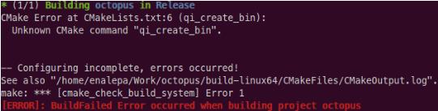

C++ SDK - Hello world (step by step)¶
Prerequisites¶
You should have some good knowledges in C++. However, some C++11 new features independent of NAOqi SDK are detailed in this tutorial.
Set your environment¶
To set your environment in order to be ready to code:
| Step | Action |
|---|---|
Install qiBuild. Why? qiBuild is the tool used for building software. How? Follow the step by step guide: Installing qiBuild. |
|
Create the directory where you want to create your module. How? Go in your worktree directory, inside it create another directory where you want to write your new module. For this tutorial, this directory is named: Result We have this tree: |
|
Create the qiproject.xml file. Why? The file The minimum content of this file should be:
How? In your <project name="octopus">
<maintainer email="jdoe@mycompany.com">John DOE</maintainer>
</project>
Note: The name of your project directory and the project name
in the file |
|
Create the CMakeLists.txt file. Why? The file How? In your octopus directory, create the file CMakeLists.txt with the following content: cmake_minimum_required(VERSION 2.8)
project(octopus)
Note: the name of your project in the CMakeLists.txt file has no impact. |
|
Your first configuration. Why? The configuration prepares your project to be builded. How? To create the new build directory where your libraries and executables
will be builded later, write, in your qibuild configure --release
Where Result Look in your project directory, qiBuild just created for you a brand new:
Where |
Your first code¶
In this part, you will learn how to write and build your first “Hello World” with qibuild.
| Step | Action |
|---|---|
Write your first code Well, we have a directory where our code will be builded in the future, but we have no code at all for the moment. Let’s write it! Because we are very original, let’s write a nice Hello World! Let’s create the following file called
In the #include <iostream>
int main()
{
std::cout << "Hello, world!" << std::endl;
return 0;
}
|
|
Build your first code (first try) Simply write: qibuild make
Result Perfect, no error. But, wait, I cannot see my hello world program anywhere! Actually, it’s normal, we never said to qiBuild what file it should build. To do so, just add in the file qi_create_bin(octopus-bin "src/main.cpp")
This lines said to qiBuild it should build an executable file named
Your cmake_minimum_required(VERSION 2.8)
project(octopus)
qi_create_bin(octopus-bin "src/main.cpp")
|
|
Build your first code (second try) Let’s compile again: qibuild make
Oh no! qiBuild shows this beautiful error message: Sounds like qiBuild cannot use the Actually that’s normal, because qiBuild does not know where this command is available. To correct that, just add to your find_package(qibuild)
This line tells to qiBuild that is should find and use the package
qiBuild which contains the command Your file cmake_minimum_required(VERSION 2.8)
project(octopus)
find_package(qibuild)
qi_create_bin(octopus-bin "src/main.cpp")
|
|
Build your first code (third and last try) Let’s compile again: qibuild make
This time it is OK, you will find your brand new executable file in the
Congratulations! You could execute it just by writing: ./octopus-bin.
Congratulations! You wrote your first Hello World with qiBuild! |
{kind=link}